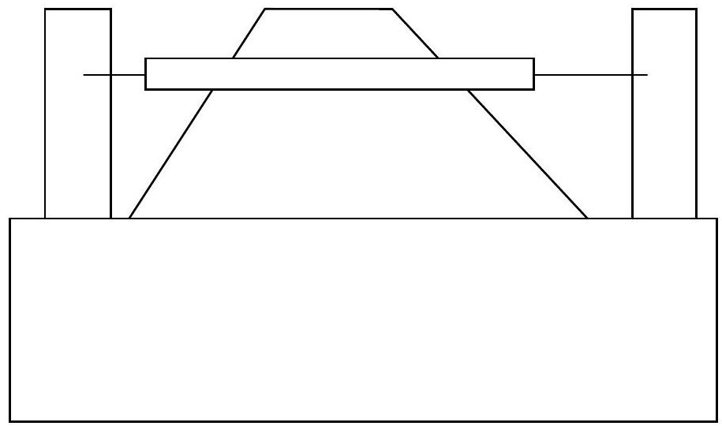
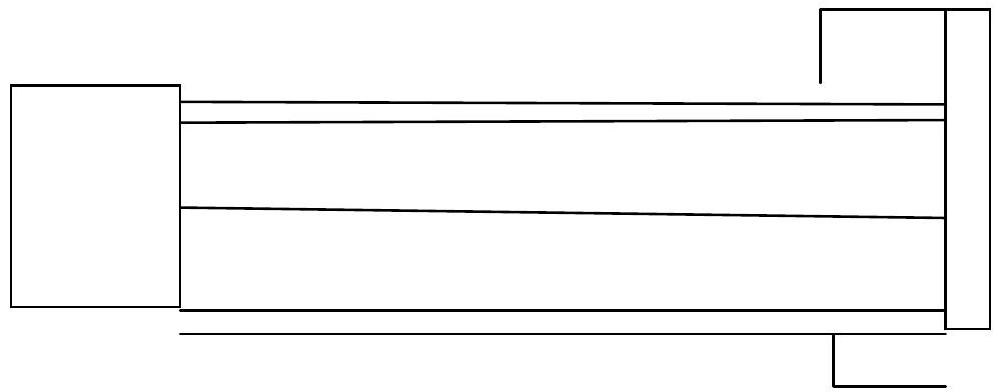
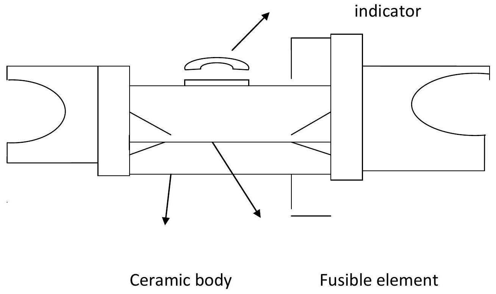
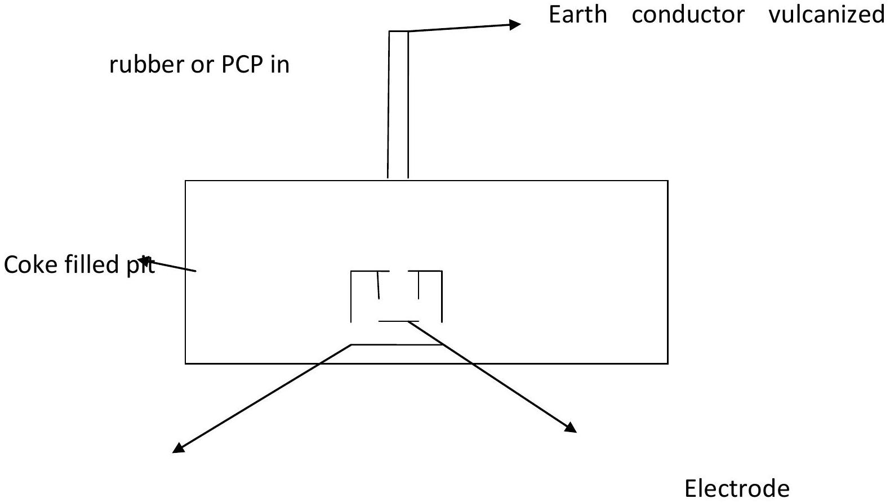
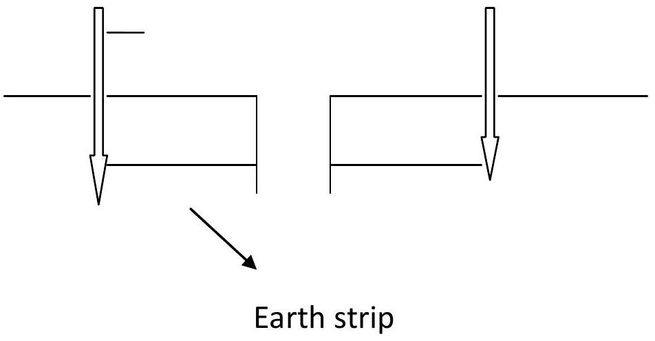
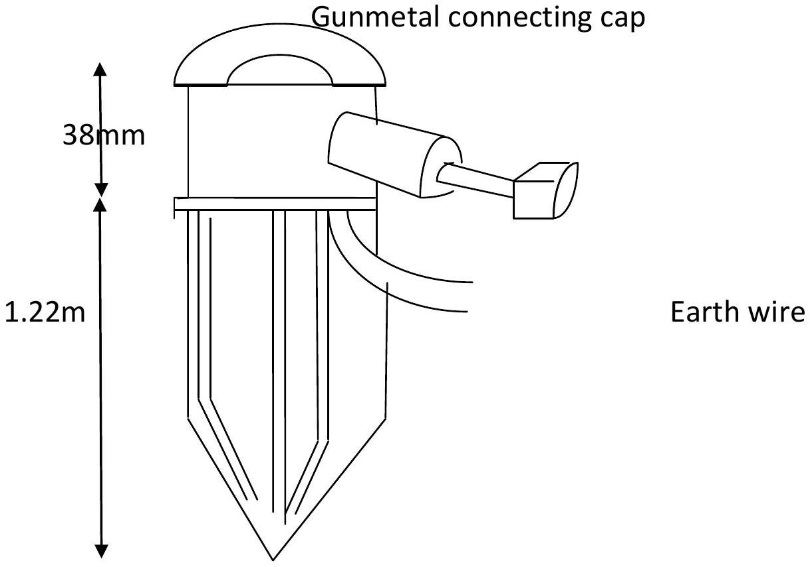
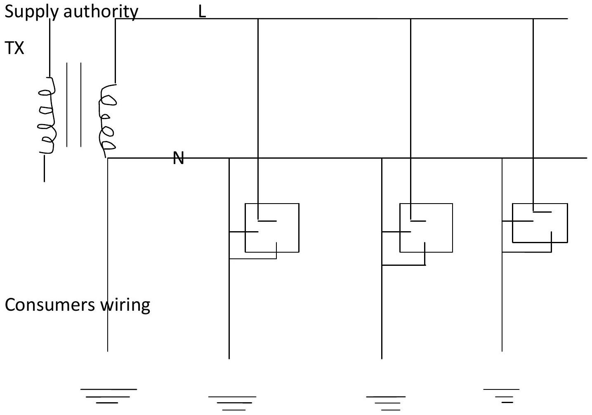
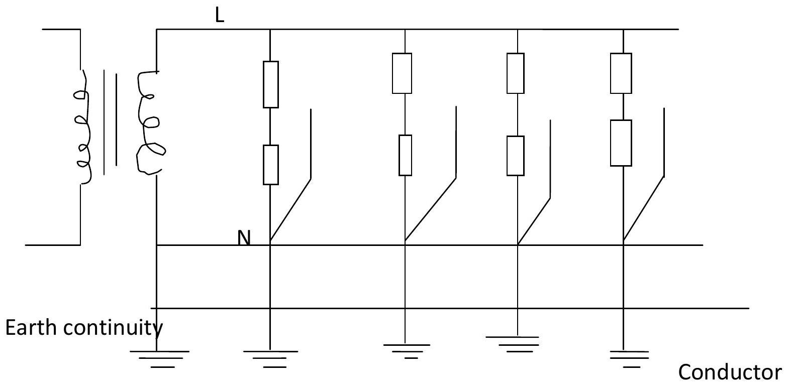
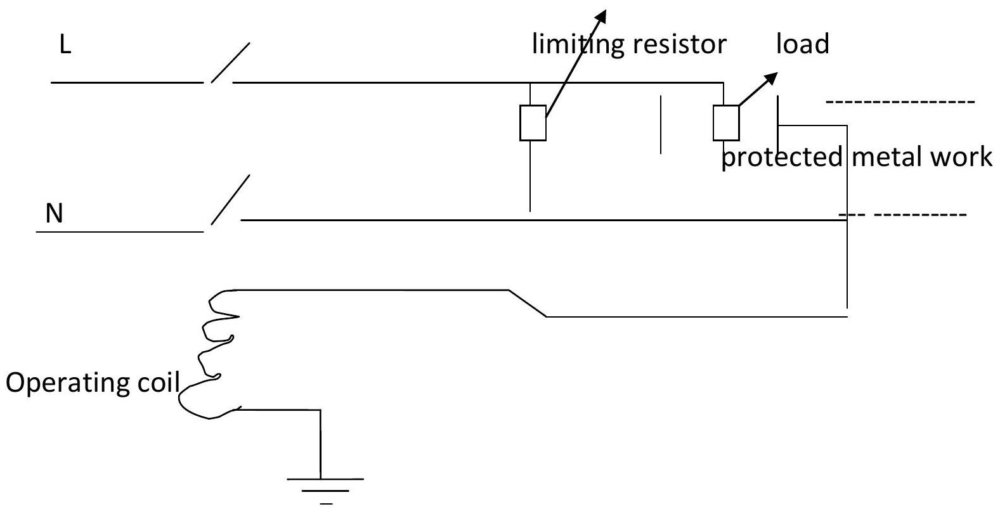
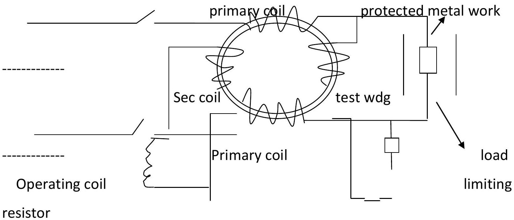

It's carried out both on the installation and the user from the risk of electric shock or fire which may Occur under fault conditions.
Fire risk
Fire risk in electrical installation can arise due to;
a] sustained overloading of wiring or equipment:
Every circuit must have some form of over current protection which takes the form of a fuse or miniature circuit breaker [m.c.b].the over current device must be capable of disconnecting the supply safely in the event of the most severe fault that can arise i.e. short cct across its own outgoing terminals. The current rating of a fuse or C.B has inverse time xristics which operates in a time which is inversely proportional to the magnitude of the fault current.
B] Faulty contacts or connections:
This can be avoided by the use of good quality accessories and fittings and by using correct methods of installation. NB//loose or poor contact can attain a very high temperature even though only a small current is flowing and the over current device gives no protection under these circumstances.
C] Earth leakage currents
This can give rise to fire risks particularly if the earthing and bonding arrangements are not capable of carrying a sustained fault current without excessive heating. Danger arises from inadequate connections such as an earth clip which has worked loose a poorly made conduit connection or corrosion of parts of the earthing system.
Shock risk
It arises whenever accidental contact is made btwn the live conductor and exposed metalwork. The risk can be guarded against either by efficient earthing or by employing earth leakage circuit breakers.
Protective devices include:
Fuses:
Def: it's a device for opening a cct by means of a conductor designed to melt when excess current flows along it.
Terms relating to a fuse:
•Fuse element: it's that part of a fuse which is designed to melt and thus open the cct.
•Catridge: an enclosure of the fuse element.
•Fuse link: fuse contacts
Terms used in connection with fuses:
•Current rating; this is the maximum current that a fuse will carry without undue deterioration of the fuse element.
•Fusing current; this is the minimum current that will blow the fuse.
•Fusing factor: this is the ratio of the fusing current to the current rating. i.e. fusing factor = $\frac{\text{fusing current}}{\text{Current rating}}$
There are three types of fuses namely: Rewirable, catridge (cartridge) & HBC or HRC
REWIRABLE FUSE
It consists of a porcelain bridge and a base. The base has to sets of contacts which fit into other contacts in the base. The fuse element usually tinned copper wire is connected btwn the terminals of the bridge and an asbestos tube or pad is usually fitted to reduce the effects of arching when the fuse melts.

Rewirable Fuse
ADVANTAGES:
It's simple and cheap
DISADVANTAGES:
-It's too easy for an inexperienced person to replace the fuse element with wire of incorrect gauge or type.
-Even when the correct wire is used for the fuse element the current rating and fusing factor may not be exactly as intended.
-There is often undue deterioration of the fuse element due to oxidation.
-Damage particularly in conditions of severe short cct.
-Lack of discrimination i.e. a momentary high current e.g. motor starting current and a continuous fault current.
CARTRIDGE FUSE
Its an advantages on rewirable fuse as the rating of a replacement element is determined by the manufacturer. The fuse carrier is designed so that its impossible to insert a fuse element of incorrect rating.

Cartridge Fuse
ADVANTAGES:
-The rating is accurately known
-The fuse element is less prone to deteriorate.
DISADVANTAGES:
-The fuse element is more expensive than the rewirable type.
-It is unsuitable for use where extremely high values of fault current may occur.
APPLICATION:
Both rewirable and cartridge fuses are widely used for protecting domestic installations and smaller industrial loads.
HIGH RUPTURING CAPACITY FUSE [HRC]
This overcomes the disability of ordinary fuses of destroying themselves in the event of a heavy overload.the fuse element here is a silver strip of special shape with a low melting point riveted in the centre. The strip is entirely sorrounded by chemically purified silica to prevent arc formation in the event that a fault current flows to operate the fuse. This overheating of the fuse and its surrounding is prevented. These fuses are often used to protect large industrial loads mains cables and in other situations where very large fault currents can occur.

HRC Fuse
ADVANTAGES:
-Its xristics can be designed to suit the nature of the load.
-It's capable to clear heavy currents safely.
-Easy to change.
DISADVANTAGES:
-It's more expensive as compared to either rewirable or Cartridge fuse.
-Relatively bulky.
MINIATURE CIRCUIT BREAKERS [M.C.B]
They provide close excess current protection. A c.b is essentially a switch which may be;
-open and closed manually
-open automatically when overloaded.
Tripping xristics may be either magnetic or thermal. Protection against sustained over current is given by the bending of a bimetallic strip whereas high speed protection against short circuit is given by magnetic operation.
ADVANTAGES
-The overload xristics are set by the manufacturer and cannot be altered.
-The xristics are such that the c.b will trip for small sustained overload but not on harmless transients overloads the operation is instantaneous when a short cct occurs.
-Faulty ccts can be easily identified.
-Supply can be quickly and easily restored when the fault has been cleared.
DISADVANTAGES
>Must be checked from time to time to ensure that it will operate correctly where faulty occurs.
>Mechanism can become sluggish and unreliable if left unused for a long period.
>Very much expensive than a fuse of the same rating.
>More bulky than a fuse of the same rating.
🌍EARTHING
TERMINOLOGIES:
•Earth: a connection to the general mass of earth by means of an earth electrode.
•Earthed: used to denote an object connected electrically to an earth electrode.
•Solidly earthed: connected electrically to an earth electrode without a fuse, switch, circuit-breaker, resistor or impedance in the earth connection.
•Earth electrode: a metal plate, rod or other conductor buried or driven into the ground and used for earthing metal work.
•Earthing lead: the final conductor means of which the connection to earth electrode is made.
•Earth-continuity conductor (ecc): the conductor including any clump connecting to the earth lead or to each other those parts of an installation which are required to be earthed. The ECC may be whole or in part of the metal conduct, the sheath of cables or the special continuity conductor of a cable or flexible cord incorporating such a conductor.
•Live metalwork: an object is said to be live when - a difference in potential exists between it and earth or it is connected to common return or the neutral of a supply system in which is, not permanently and solidly earthed.
•Continuous neutral earthing (CNE): when CNE system of earthing is used as a means of protection against earth faults in appliances in consumer's premises, the framework of such appliances is connected to the neutral wire of the supply authority's network.
•Earth resistance: the ohmic resistance between an earth-electrode system and the general mass of the earth.
•Earth resistivity: the resistance in ohms per cubic centimeter (R/cm${}^3$) of a sample of earth.
•Bond: to connect together electrically two or more conductors.
Approximate values for soil resistivity:
Approximate Values for Soil Resistivity
Description
Ohm-cm
Marshy ground
200-350
Loam and clay
400-15,000
Chalk
6000-40,000
Sand
9000-800,000
Pearl
5000-50,000
Sandy gravel
5000-50,000
Rock
100,000 upwards
Reasons for earthing
1)To maintain the potential of any part of a system as a definite value w.r.t earth.
2)To allow current to flow to earth in the event of a fault so that the protective gear will operate to isolate the faulty connection.
3)To make sure that in the event of a faulty apparatus normally 'dead' cannot reach a dangerous potential w.r.t. earth.
IEE REG:
-Where metalwork other than current -carrying conductors is liable to become charged with electricity in such a manner as to create a danger if the insulation of a conductor should become defective or if a defect should occur in any apparatus the metal work shall be earthed in such a manner as will ensure immediate electrical discharge without danger.
-Every item of apparatus and every conductor shall be prevented from giving rise to earth-leakage currents by all insulated construction by double insulation, by isolation or by earthing of exposed metal ports.
-Extraneous fixed metalwork which cannot be effectively segregated from the metal work of the installation should be bonded to the earth- continuity conductor.
-The consumer's earthing terminal to which the earth-continuity conductor shall be provided near to the consumer's terminal.
-Consumers earthing terminal shall be bonded to the metal work of public gas and water services as near as possible to their points of entry into the premises.
-The C.S.A of every copper earthing lead shall not be less than $6 \mathrm{~mm}^{2}$ with a maximum size of $70 \mathrm{~mm}^{2}$ except for the earthing of a TX neutral or an electrode boiler which is $2.5 \mathrm{~mm}^{2}$.
-One point of the secondary winding and noncurrent carrying parts of the metalwork of any transformer shall be connected to the earth continuity conductor.
There are several methods used to achieve the earthing of an installation which include:
A] Connection to the metal sheath and armoring of a supply authority's underground supply cable.
The provision of a cable sheath as an earth electrode connection is very common nowadays but incase the earthing is proved ineffective the authority is not held responsible.
B] CONTINOUS EARTH WIRE [CEW]
Connection to the continuous earth wire (CEW) provided by a supply authority where the distribution of energy is by overhead lines. CEW is not always provided by the authority except in those areas which have extremely high values of soil resistivity e.g. peat and rock.
C] Connection to an earth electrode sunk in the ground for the purpose.
Connection to an earth electrode sunk in the ground is the most common means of earthing and the earth electrode can be in four forms:
i)Pipe It's a 200mm diameter cast-iron pipe, 2 metres long and buried in a coke-filled pit. It requires a certain amount of excavation to make the pit where the earth plate is installed and since iron is prone to corrosion especially if the coke has high content of sulphur it's highly insulated as shown below.

Cast Iron Pipe/Plate Electrode
ii)Plate Plate electrodes are normally of cast iron buried vertically with the centre about one meter below the surface. (Copper may also be used). The plate's electrodes provide a large surface area and are used mainly where the ground is shallow i.e. where the resistivity is low near the surface but increases rapidly with depth. Excavation is also required and care is needed to protect the earth-electrode connection from corrosion.
iii)Strip Copper strip is most useful in shallow overlying rock. The strip should be buried to a depth of not less than 50 cm .

Strip Electrode
iv)Rods They are very economical and require no excavation for their installation. They are of standard lengths and made from hard drawn copper. They have a hardened steel tip and a steel driving cap. Sometimes the CU rod has a steel rod running through its centre for strength while it is being driven into rocky soil.

Rod Electrode (Page 72 in text, image likely from page 73 of PDF)
Advantages
a) The buried length allows soil contact with the rod to be close and definite.
[D] CONTINOUS NEUTRAL EARTHING
The CNE method gives protection against earth-fault conditions and uses the neutral of incoming supply as the earth point or terminal where all protected metalwork is connected by means of the installation ECC's to the neutral- service conductor at the supply- intake position. This makes line to earth faults converted to line- to neutral faults which ensures that sufficient current will flow under fault conditions to blow a fuse or trip an overload cb thus isolating the faulty connection from the supply.

Continuous Neutral Earthing (CNE)
[E] PROTECTIVE MULTIPLE EARTHING (P.M.E)
The principle of this system is that the earth continuity is connected to the neutral service conductor at the supply intake position and the neutral conductor is being connected to earth at regular intervals as shown.

Protective Multiple Earthing (PME)
Advantages
i)There is low impedance path for fault current to flow via the neutral conductor.
ii)The impedance to earth is low even though individual earth impedance may be high since many earth connections are made in parallel.
Disadvantages
i)The shock risk that may arise if any earthed metal work associated with the system is not bonded to the neutral conductor or if the neutral conductor is broken.
ii)Earth currents may circulate between the multiple earth electrodes causing interference with telephone systems.
There are two dangerous conditions when P.M.E is in use which are
a)Fault to earth metal work not bonded to neutral.
b)Broken neutral conductor and because of these inherent dangers which can arise with this system it is essential that the IEE reg concerning it are strictly observed some include:
-The use of this system must be authorized by the minister of power with the concurrence of the post master general (Reg 4 electricity supply Reg 1937)
-All premises supplied must be connected so as to use the P.M.E system of earthing.
-The maximum resistance from neutral to earth must not exceed 10R (Ohms)
-No fusible cut out, automatic CB, removable link or single pole switch shall be included in the neutral conductor.
-Earth continuity conductors must have a resistance of less than $1/2 \text{ohm}$ which must be tested by passing a current of not less than to 10A for a period of at least five minutes.
In general the above requirements limit the application of P.M.E to new networks since it is usually V , expensive to adapt all the installations connected to an existing network to meet all the necessary requirements.
[F] INSTALLATION OF AUTOMATIC FAULT PROTECTION
It is obtained by use of earth leakage connection breakers which are of two forms.
> Voltage operated cct breaker:
They are designed to be directly responsive to fault voltages which appear on protected metalwork caused by earth leakage currents.

Voltage Operated ELCB
This fault voltage is V=IR where R is resistance of the earth, I the leakage current. They operate on currents as low as 50 mA and their operating time is too little e.g. BS 842 unit has less than one cycle. The trip coli is connected btwn protected metal work and earth in the same way a voltmeter is connected to measure the voltage btwn the earth and the metalwork. If a fault occurs, the current will flow through the trip coil to energize it and so trip the breaker contacts. Voltage operated E.L.C.B.S are used in domestic and small industrial installations to give protection against shock risk where good earth cannot be obtained.
> Current operated ELCB

Current Operated ELCB
The basic principle of operation depends upon more current flowing into the live side of primary winding than leaves the neutral or the return [earth] conductor. The essential part of it is a TX with opposed wdgs carrying the incoming and outgoing current. In a healthy cct where values of current in the wdgs are equal the magnetic effects cancel each other out but when a fault occurs it will cause an out of balance condition and create a magnetic effect In the tx core which links with the turns of a small sec wdg. An e.m.f is induced in this wdg which is permanently connected to the trip coil of the c.b and causes a current to flow in the trip coil which energizes the coil to trip the breaker contacts.